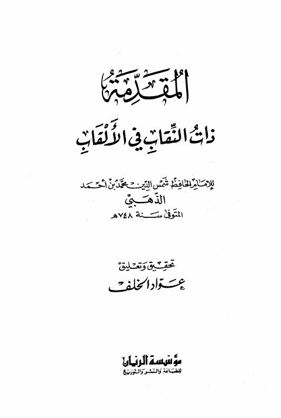
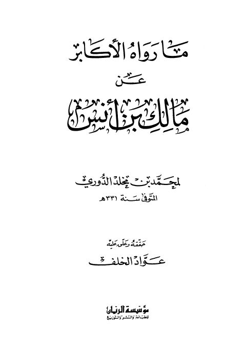
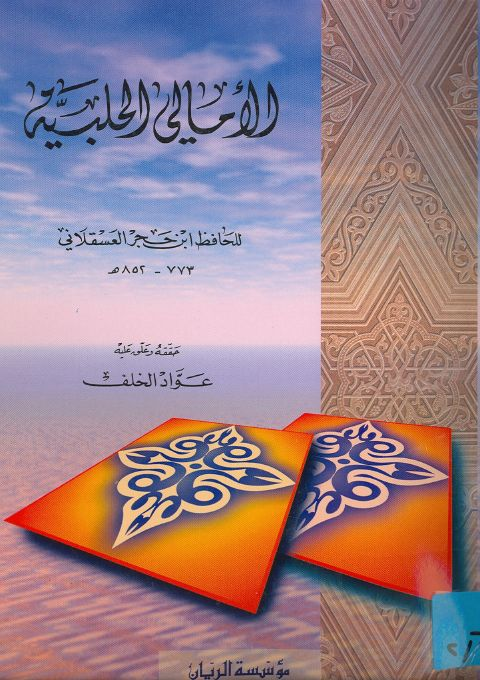

عواد الخلف
Author
Resources
 أسماء من عاش ثمانين سنة بعد شيخه أو بعد سماعه
أسماء من عاش ثمانين سنة بعد شيخه أو بعد سماعه
شمس الدين محمد بن أحمد بن عثمان الذهبي
أسماء من عاش ثمانين سنة بعد شيخه أو بعد سماعه
أسماء من عاش ثمانين سنة بعد شيخه أو بعد سماعه
شمس الدين محمد بن أحمد بن عثمان الذهبي

المقدمة ذات النقاب في الألقاب المقدمة ذات النقاب في الألقاب شمس الدين محمد بن أحمد بن عثمان الذهبي
ما رواه الأكابر عن مالك بن أنس ما رواه الأكابر عن مالك بن أنس محمد بن مخلد الدوري
الأمالي الحلبية- ط. الريان الأمالي الحلبية- ط. الريان أحمد بن علي بن حجر العسقلاني